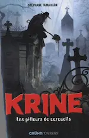
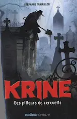
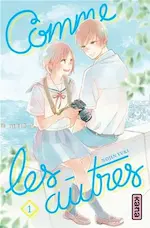
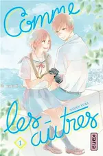
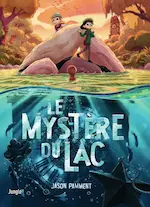
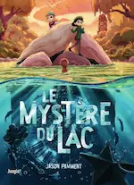

2026
Février


Janvier


2025
Novembre


Octobre


Août

 

Juillet
 
Juin


Avril
 


Mars


Février


2024
Décembre


Juillet
- 31 — 💖 La dernière allumette de Marie Vareille
- 11 (édité) — 💖 Les Cosmiques 🵠de Diatomée
Juin

Avril
-
20 —
 À son image de Jérôme Ferrari
À son image de Jérôme Ferrari
-
06 —
 À la lumière du petit matin d’Agnès Martin-Lugand
À la lumière du petit matin d’Agnès Martin-Lugand
-
06 —
 Gen-X de Diatomée
Gen-X de Diatomée
Janvier

2023
Novembre
-
19 —
 La nostalgie de l’Ange d’Alice Sebold
La nostalgie de l’Ange d’Alice Sebold
- 19 (édité) — 💖 Pour un garçon de Nick Hornby